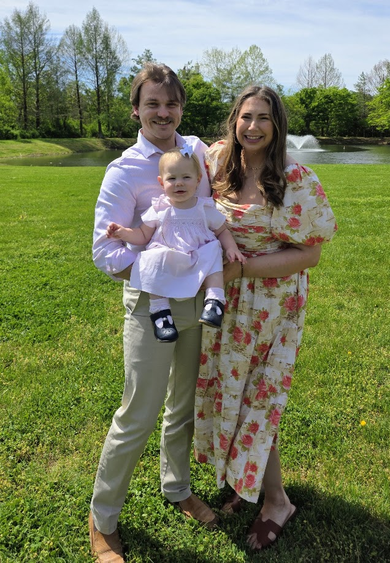

Modeling
Python, Hugging Face Transformers, and PyTorch for loading the base BERT model and fine-tuning it on domain-specific Greek text relationships.
Data Scientist & Machine Learning Engineer
I am a data scientist in the Nashville area, hoping to move to Huntsville, AL. I build practical machine learning systems that improve data quality, speed up decisions, and make analytics easier to trust across teams.
Focused on Azure ML, NLP workflows, and production-ready Python pipelines.
Methods: CRISP-DM, Agile workflows, and model lifecycle management.
Identified correlations across purchase datasets to predict labels and reduce analyst workload by 50%; leveraged GPU acceleration, NLP, and Azure ML Studio to improve categorization efficiency per line by 5x; implemented Git-based CI/CD workflows for model lifecycle management; and adapted Hugging Face-based LLM techniques to improve unstructured text prediction performance by 5-10%.
Owned end-to-end data quality initiatives and reporting, deployed Python-based machine learning models to support classification and surface data quality concerns, managed ad hoc issues from internal and external stakeholders, delivered regular presentations on quality performance, and maintained classification rules for GL account and financial reporting workflows.
Built a book of business with 50 clients and 500+ contacts, managed the full client acquisition lifecycle from marketing through sales operations, analyzed client financial data in Excel and related tools, and delivered personalized financial plans including net worth projections, retirement planning, and risk assessments.
Coursework included corporate finance and capstone work. Received an academic scholarship and leadership recognition in Auburn University Marching Band.
Featured project: a fine-tuned Greek semantic analysis demo with a live Hugging Face deployment.
Core tools used to train, evaluate, and deploy the model behind the demo.
Python, Hugging Face Transformers, and PyTorch for loading the base BERT model and fine-tuning it on domain-specific Greek text relationships.
DBT, Pandas, and custom preprocessing scripts for cleaning verses, structuring training pairs, and preparing inputs for tokenization and evaluation.
Notebook-driven iteration with MLFlow and metric review to compare runs, inspect errors, and refine the training data used for semantic similarity. Given more time, I would have preferred a dagster pipeline to set a more consistent workflow.
Hugging Face Spaces for serving the interactive interface so the fine-tuned model can be tested directly in the browser.
This live Hugging Face Space showcases a Greek semantic analysis workflow I built to explore context, meaning, and pattern detection in biblical text. The app uses a model which I fine-tuned from a separate BERT model and is designed to pick up on relationships between texts that we wouldn't be able to identify with traditional keyword search. The interface allows users to input Greek text and receive insights about semantic relationships, thematic connections, and contextual patterns across the corpus.
It is designed as a practical proof-of-concept: test sample inputs, review model behavior, and see how NLP techniques translate into a usable interface. It's not perfect as the model still needs some work, especially regarding the curation of training data on which verses are similar. But you can see that even with a less than perfect curation of training data, it still picks up on some meaningful patterns.
I am a Data Scientist with experience leading data quality initiatives and building machine-learning pipelines at HealthTrust. I develop scalable Azure ML models that improve item categorization accuracy and streamline validation workflows. Outside of work, I enjoy spending time with my family, playing music, learning about history, and exploring other technical topics like electronics and home labbing.

Outside of work, I'm a husband and a dad — the best two jobs I've got.